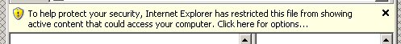
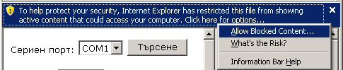
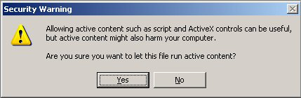

Примерна програма за демонстриране възможностите на фискален принтер Zeka
Този пример следва да се стартира под Windows и Internet Explorer версия 4 или по-висока. Правилната работа с други браузъри (Mozilla / Firefox, Opera, ...) не се гарантира! Необходимо е да разрешите ползването на COM контроли във Internet Explorer!
В Windows XP SP2 и по-нови версии на Windows може да видите следното запитване:

В такъв случай трябва да кликнете с мишката върху жълтата лента и да изберете "Allow Blocked Content..." както е показано по-долу:

След което трябва да отговорите с "Yes" на запитването:

В противен случай програмата ще бъде блокирана от Internet Explorer и няма да е в състояние да извърши желаните от Вас действия.